Straight waveguide (UBC)
L = 20 µm · 23.00 x 0.50 µm
download GDS · authoritative UBC stack
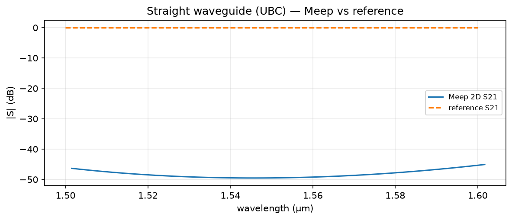
Meep vs reference
runs: 2d_straight
Executed notebook plus GDS geometry for each validation case, from branch pdk-validation.
L = 20 µm · 23.00 x 0.50 µm
download GDS · authoritative UBC stack

Meep vs reference
runs: 2d_straight
gap = 0.2 µm, L = 10 µm · 33.00 x 4.50 µm
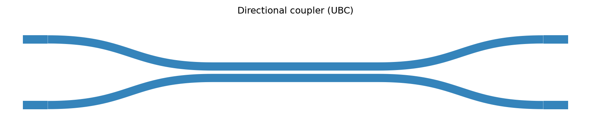
download GDS · authoritative UBC stack
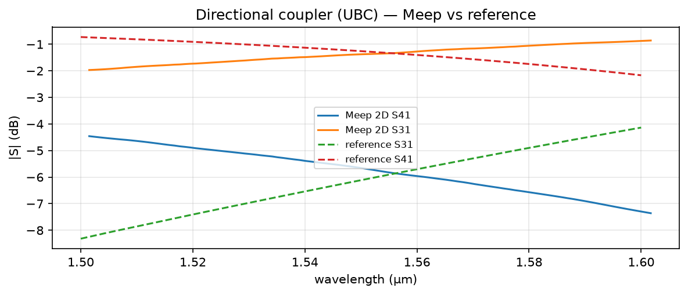
Meep vs reference
runs: 2d_coupler
gap = 0.1 µm, r = 10 µm · 28.50 x 13.10 µm
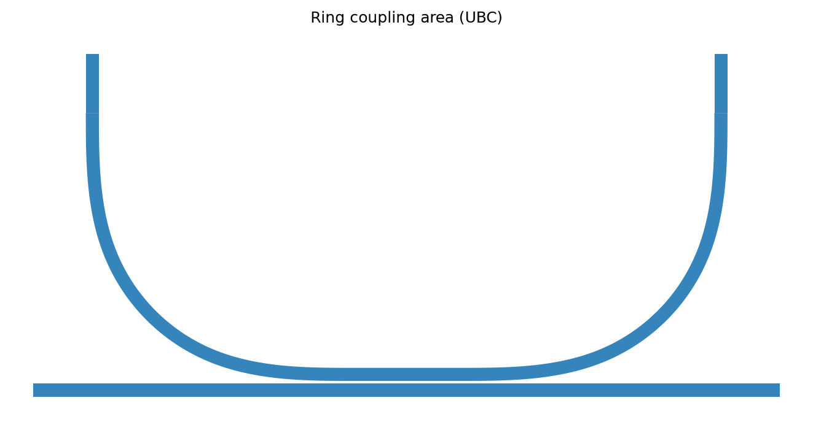
download GDS · authoritative UBC stack; 2-D
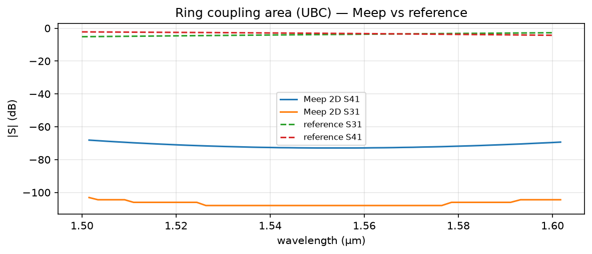
Meep vs reference
runs: 2d_ring_coupling
dL = 214.215 µm · 112.10 x 53.50 µm
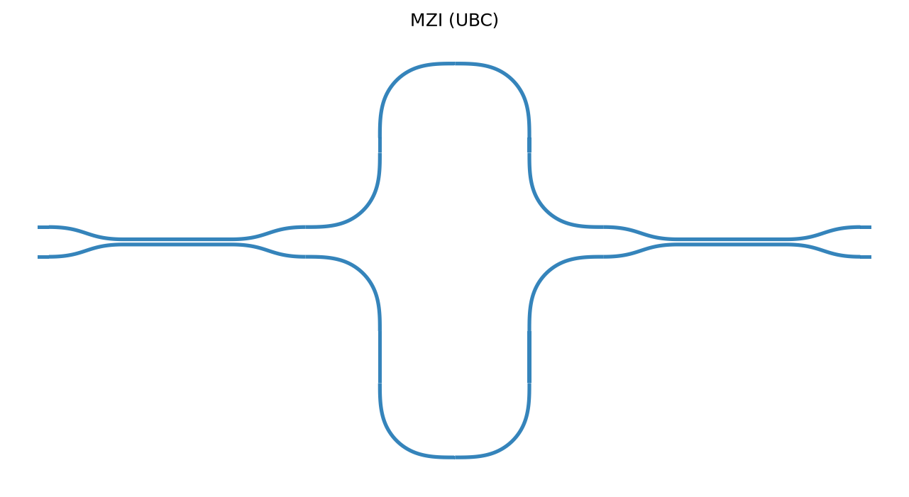
download GDS · runtime-limited smoke run; no accepted spectrum
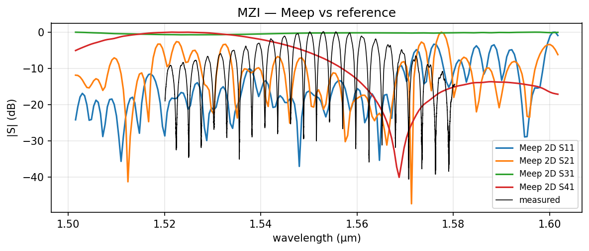
reference data only — no simulated run recorded
runs: no recorded run
r = 10 µm, gap = 0.1 µm · 24.51 x 21.71 µm
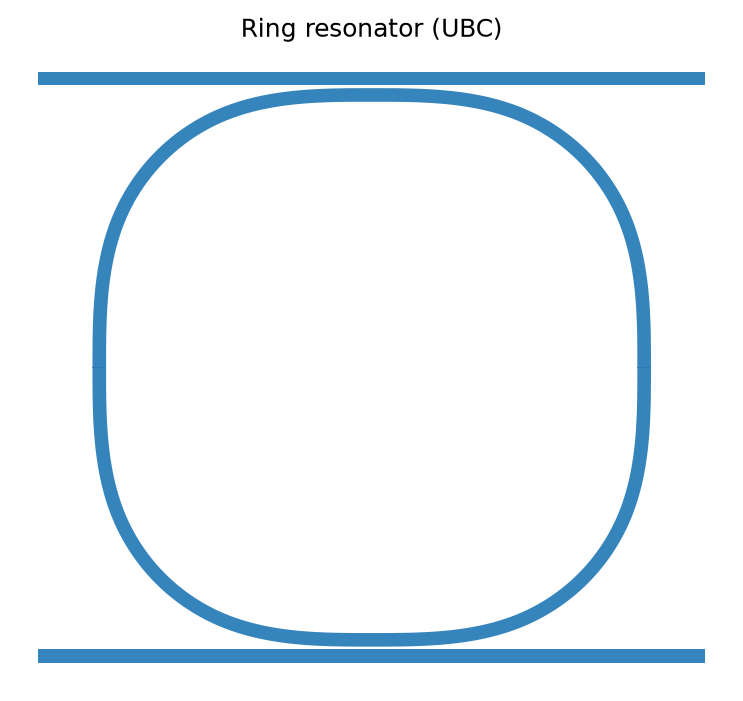
download GDS · authoritative UBC stack; 2-D
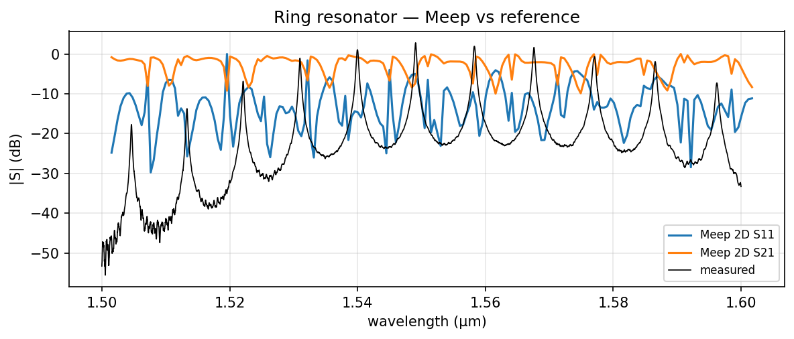
Meep vs reference
The measured through detector is inferred from column 1; the file has no detector labels. Normalized S21 RMS remains 8.00 dB.
runs: 2d_ring
200 sinusoidal periods · 66.60 x 0.56 µm
download GDS · measured reflection fixture is not de-embedded
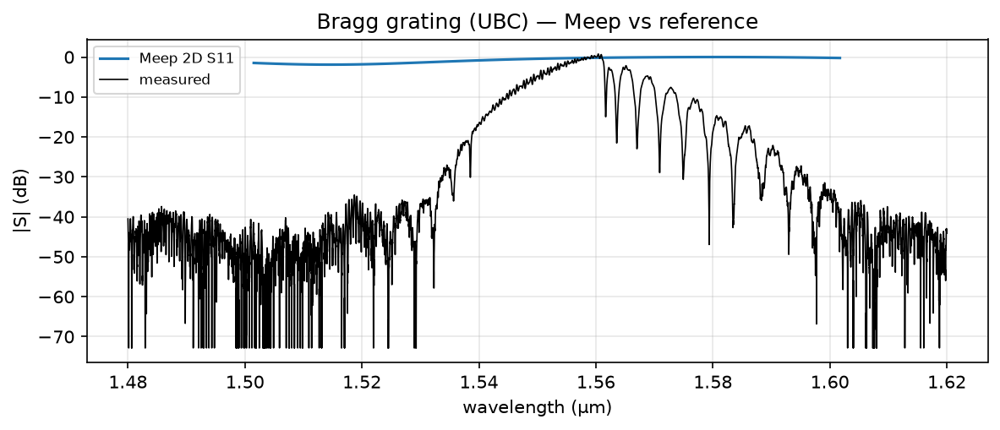
Meep vs reference
runs: 2d_bragg
gap = 0.2 µm, L = 10 µm · 33.00 x 4.45 µm
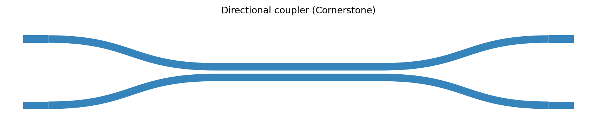
download GDS · authoritative Cornerstone stack
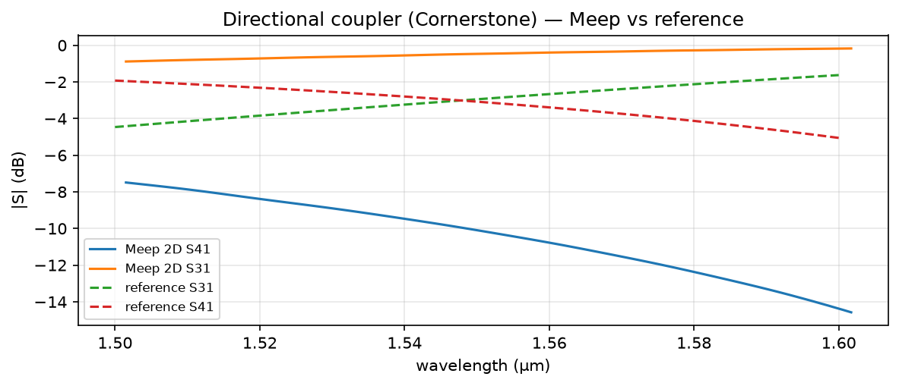
Meep vs reference
runs: 2d_cspdk_coupler
gap = 0.1 µm, r = 10 µm · 27.45 x 12.50 µm
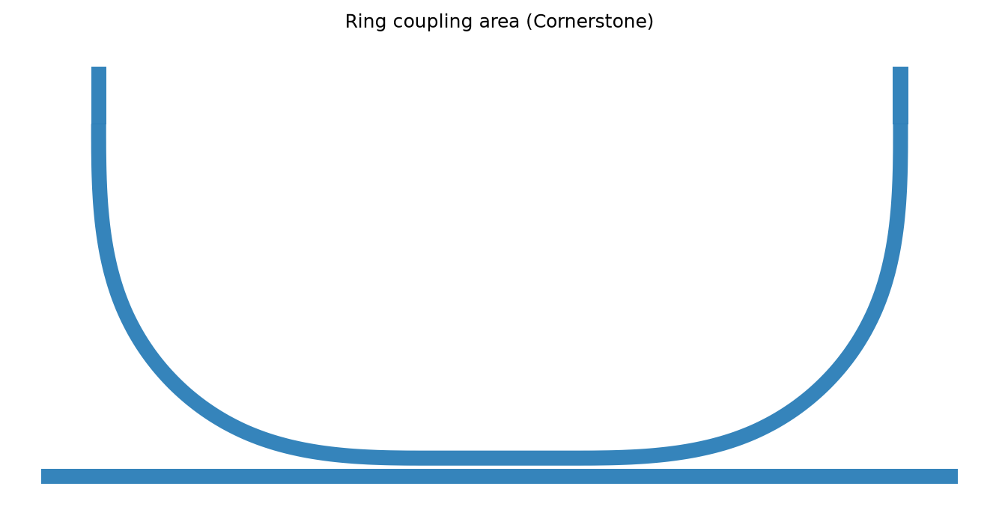
download GDS · authoritative Cornerstone stack; 2-D
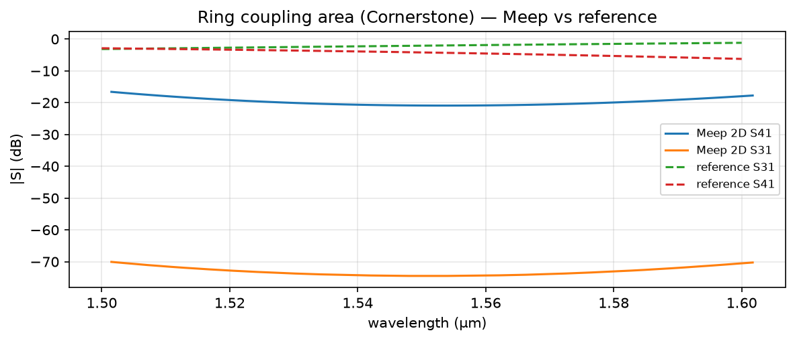
Meep vs reference
runs: 2d_cspdk_ring_coupling
gap = 0.1 µm, r = 10 µm · 29.00 x 12.35 µm
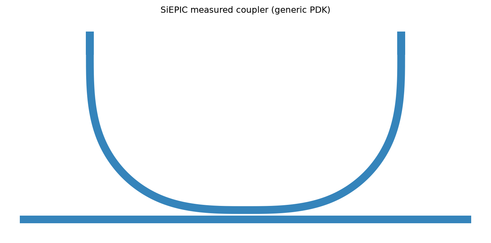
download GDS · generic photonic PDK; measured data
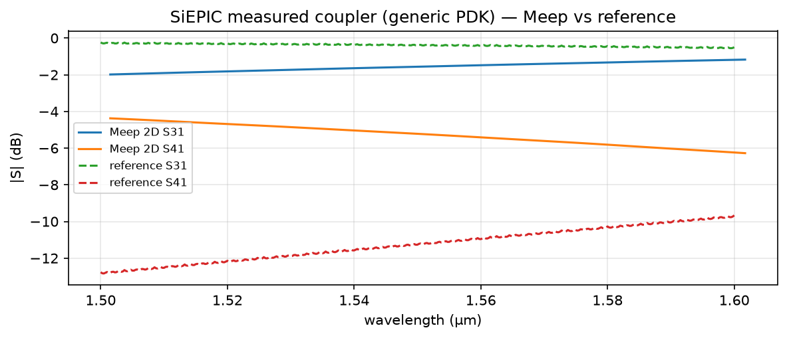
Meep vs reference
runs: 2d_siepic_coupler